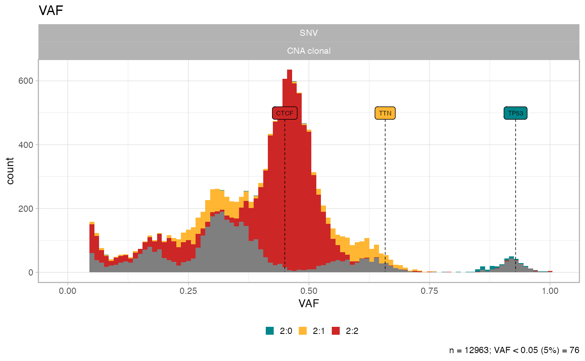
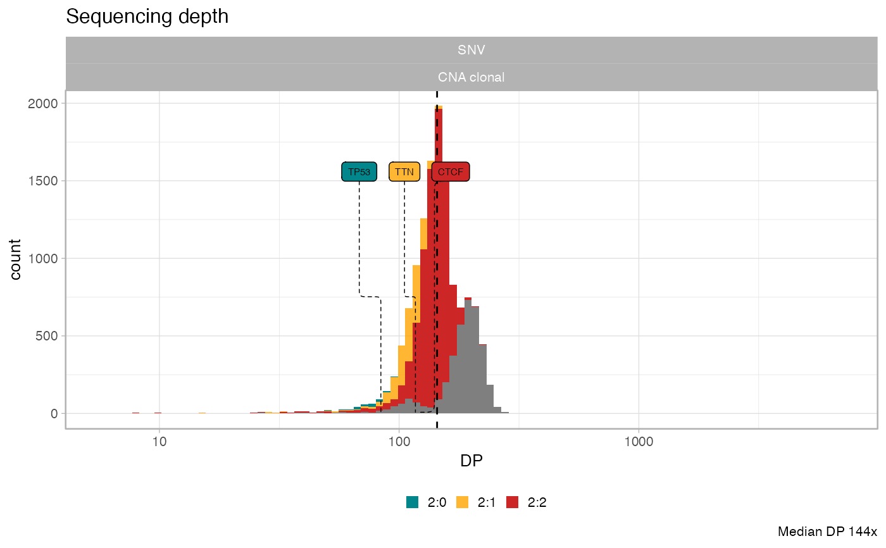
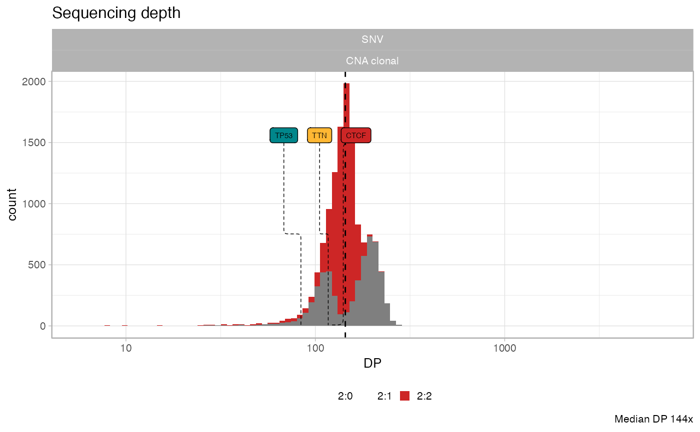
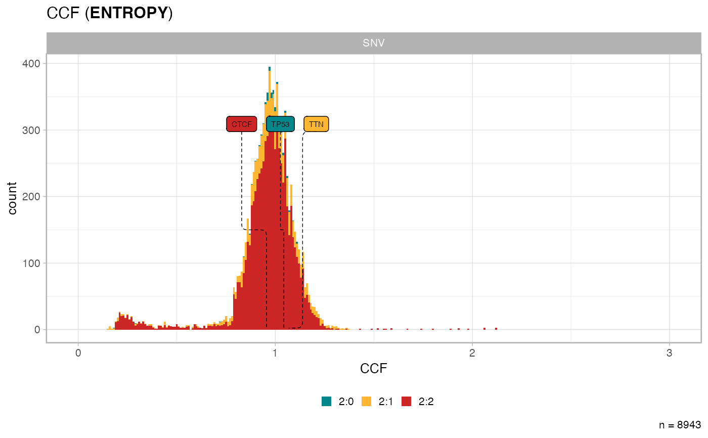

This function plots the histogram of any of the following: the Variant Allele Frequency (VAF), the depth of sequencing (DP), the nuber of reads with the variant (NV) and the Cancer Cell Fractions (CCF) esimates (that must be computed before.
The plot can be subset by selecting only data in certain segments, identified by the karyotype shortname, and will be coloured accordingly.
plot_data_histogram( x, which = "VAF", karyotypes = c("1:0", "1:1", "2:0", "2:1", "2:2") )
| x | An object of class |
|---|---|
| which | One of |
| karyotype | A list of karyotype ids in |
A ggplot object.
data('example_dataset_CNAqc', package = 'CNAqc') x = init(example_dataset_CNAqc$snvs, example_dataset_CNAqc$cna,example_dataset_CNAqc$purity)#> [ CNAqc - CNA Quality Check ] #>#> ℹ Using reference genome coordinates for: GRCh38.#> ℹ Drivers are annotated, but 'gene' column is missing, using mutation location.#> ! Missing CCF column from CNA calls, adding CCF = 1 assuming clonal CNA calls.#> ℹ Input n = 12963 mutations for 267 CNA segments (267 clonal, 0 subclonal)#>#> ✔ Mapped n = 12963 mutations to clonal segments (100% of input)plot_data_histogram(x)#> Warning: Removed 8 rows containing missing values (geom_bar).plot_data_histogram(x, which = 'DP')plot_data_histogram(x, which = 'DP', karyotypes = '2:2')#> 2:0 using the entropy method. ─#> ℹ Expected Binomial peak(s) for these calls (1 and 2 copies): 0.445 and 0.89#> ℹ Mixing pre/ post aneuploidy: 0.09 and 0.91#> ℹ Not assignamble area: [0.631578947368421; 0.723684210526316]#> 2:1 using the entropy method. ─#> ℹ Expected Binomial peak(s) for these calls (1 and 2 copies): 0.307958477508651 and 0.615916955017301#> ℹ Mixing pre/ post aneuploidy: 0.55 and 0.45#> ℹ Not assignamble area: [0.423423423423423; 0.504504504504504]#> 2:2 using the entropy method. ─#> ℹ Expected Binomial peak(s) for these calls (1 and 2 copies): 0.235449735449735 and 0.470899470899471#> ℹ Mixing pre/ post aneuploidy: 0.09 and 0.91#> ℹ Not assignamble area: [0.290780141843972; 0.368794326241135]plot_data_histogram(x, which = 'CCF')#> Warning: Removed 6 rows containing missing values (geom_bar).